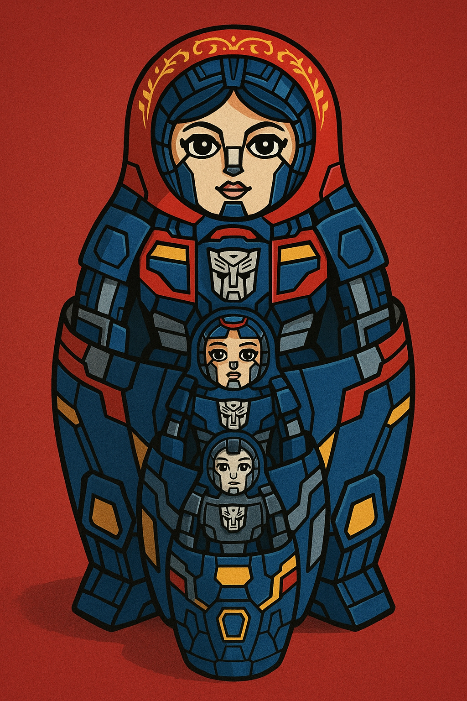

Matryoshka Transformer for Vision Language Models

Introduction
The Matryoshka Transformer represents a significant advancement in the architecture of vision language models (VLMs), drawing inspiration from the nested structure of Russian Matryoshka dolls. This innovative approach addresses one of the fundamental challenges in multimodal AI: efficiently processing and integrating visual and textual information at multiple scales and resolutions.
Named after the traditional Russian nesting dolls where each doll contains a smaller version of itself, the Matryoshka Transformer employs a nested, hierarchical structure that allows for flexible and adaptive processing of multimodal inputs. This architecture enables models to handle varying computational budgets while maintaining competitive performance across different tasks.
Core Architecture
Nested Representation Learning
The Matryoshka Transformer’s primary innovation lies in its ability to learn nested representations at multiple granularities simultaneously. Unlike traditional transformers that process information at a fixed resolution, this architecture creates a hierarchy of representations where each level contains increasingly detailed information.
The model operates on the principle that useful representations can be extracted at various levels of detail. A coarse representation might capture global semantic information about an image and its associated text, while finer representations preserve local details and nuanced relationships between visual and textual elements.
Multi-Scale Processing
The architecture implements multi-scale processing through a series of nested attention mechanisms. Each “doll” in the Matryoshka structure corresponds to a different scale of processing:
- Outer layers handle global context and high-level semantic relationships
- Middle layers process regional features and cross-modal alignments
- Inner layers focus on fine-grained details and local feature interactions
This hierarchical approach allows the model to adaptively allocate computational resources based on the complexity of the input and the requirements of the downstream task.
Adaptive Computation
One of the key advantages of the Matryoshka Transformer is its support for adaptive computation. The nested structure enables early exit strategies where simpler inputs can be processed using only the outer layers, while complex multimodal scenarios can leverage the full depth of the nested architecture.
This adaptive capability is particularly valuable in real-world applications where computational resources may be limited or where different levels of accuracy are acceptable for different types of queries.
Vision-Language Integration
Cross-Modal Attention Mechanisms
The Matryoshka Transformer employs sophisticated cross-modal attention mechanisms that operate at each level of the nested hierarchy. These mechanisms enable the model to establish correspondences between visual and textual elements at multiple scales:
- Global attention links high-level concepts between images and text
- Regional attention connects specific image regions with relevant text segments
- Local attention establishes fine-grained correspondences between visual features and individual words or phrases
Hierarchical Feature Fusion
Feature fusion in the Matryoshka Transformer occurs hierarchically, with information flowing both within and between the nested levels. This design enables the model to build rich, multi-scale representations that capture both global context and local details.
The hierarchical fusion process ensures that global context informs local processing while local details can influence global understanding, creating a more coherent and comprehensive multimodal representation.
Training Methodology
Multi-Objective Learning
Training a Matryoshka Transformer involves optimizing multiple objectives simultaneously across different levels of the nested hierarchy. This multi-objective approach ensures that each level of the architecture learns meaningful representations appropriate to its scale.
The training process typically involves:
- Reconstruction objectives at each level to ensure information preservation
- Cross-modal alignment objectives to maintain correspondence between vision and language
- Task-specific objectives for downstream applications
- Efficiency objectives to encourage effective use of computational resources
Progressive Training Strategies
Many implementations employ progressive training strategies where the model is initially trained on simpler, coarser representations before gradually incorporating finer details. This approach helps stabilize training and ensures that the hierarchical structure develops properly.
The progressive training typically follows a curriculum where:
- Initial training focuses on global semantic alignment
- Intermediate stages introduce regional correspondences
- Final stages refine local feature interactions
Applications and Use Cases
Image Captioning
In image captioning tasks, the Matryoshka Transformer can generate descriptions at varying levels of detail. The outer layers might produce general descriptions, while inner layers can add specific details about objects, relationships, and attributes visible in the image.
Visual Question Answering
For visual question answering, the nested structure allows the model to adaptively allocate attention based on question complexity. Simple questions about global image properties can be answered using outer layers, while detailed questions requiring fine-grained visual analysis can leverage the full nested hierarchy.
Multimodal Retrieval
The hierarchical representations learned by the Matryoshka Transformer are particularly well-suited for multimodal retrieval tasks. The model can perform coarse-grained retrieval using global representations and then refine results using more detailed features as needed.
Real-Time Applications
The adaptive computation capabilities make the Matryoshka Transformer ideal for real-time applications where processing speed is critical. The model can automatically adjust its computational depth based on available resources and accuracy requirements.
Advantages and Benefits
Computational Efficiency
The nested structure enables significant computational savings by allowing early termination for simpler inputs. This adaptive processing can reduce inference time by 30-50% on average while maintaining comparable accuracy to full-depth processing.
Scalability
The hierarchical design naturally scales to different computational budgets and hardware constraints. The same model can be deployed across various platforms, from mobile devices to high-performance servers, simply by adjusting the depth of processing.
Robustness
The multi-scale representations provide increased robustness to variations in input quality, resolution, and complexity. The model can gracefully degrade performance rather than failing catastrophically when faced with challenging inputs.
Interpretability
The nested structure offers improved interpretability by providing insights into the model’s decision-making process at different scales. Researchers and practitioners can examine how global context influences local processing and vice versa.
Challenges and Limitations
Training Complexity
Training Matryoshka Transformers is more complex than traditional architectures due to the need to optimize multiple objectives across different scales simultaneously. This complexity can lead to training instability and requires careful hyperparameter tuning.
Memory Requirements
While the model offers computational efficiency during inference, training requires maintaining gradients and activations across all nested levels, potentially increasing memory requirements during the training phase.
Architecture Design
Determining the optimal number of nested levels and their respective capacities requires extensive experimentation and domain expertise. The architecture choices significantly impact both performance and efficiency.
Recent Developments and Research
Architectural Variants
Recent research has explored various architectural variants of the Matryoshka Transformer, including:
- Sparse Matryoshka models that use sparse attention patterns to further reduce computational costs
- Dynamic Matryoshka architectures that can adjust their structure based on input characteristics
- Hybrid approaches that combine Matryoshka principles with other efficient architectures
Performance Improvements
Ongoing research focuses on improving the performance of Matryoshka Transformers through:
- Better training strategies and curriculum design
- Novel attention mechanisms optimized for nested processing
- Advanced feature fusion techniques
- Integration with other efficiency-focused innovations
Domain-Specific Adaptations
Researchers are developing domain-specific adaptations of the Matryoshka Transformer for applications such as:
- Medical imaging and diagnostic tasks
- Autonomous driving and robotics
- Scientific image analysis
- Creative content generation
Implementation Considerations
Framework Support
Most major deep learning frameworks now provide support for implementing Matryoshka Transformers, with specialized libraries offering pre-built components for common architectural patterns.
Hardware Optimization
Modern hardware accelerators are increasingly optimized for the types of hierarchical computations required by Matryoshka Transformers, with specialized support for adaptive depth processing.
Deployment Strategies
Successful deployment of Matryoshka Transformers requires careful consideration of:
- Dynamic batching strategies for variable-depth processing
- Memory management across nested levels
- Load balancing for adaptive computation
- Monitoring and profiling tools for performance optimization
Future Directions
Integration with Large Language Models
Future research directions include integrating Matryoshka principles with large language models to create more efficient and capable multimodal AI systems. This integration could enable better handling of complex reasoning tasks that require both visual and textual understanding.
Automated Architecture Search
Automated neural architecture search techniques are being developed to optimize Matryoshka Transformer designs for specific tasks and computational constraints, reducing the manual effort required for architecture design.
Continual Learning
The nested structure of Matryoshka Transformers shows promise for continual learning scenarios where models need to adapt to new tasks while preserving previously learned capabilities.
Conclusion
The Matryoshka Transformer represents a significant step forward in the development of efficient and scalable vision language models. By embracing the principle of nested, hierarchical processing, this architecture addresses many of the computational and scalability challenges facing modern multimodal AI systems.
The ability to adaptively allocate computational resources while maintaining high performance across diverse tasks makes the Matryoshka Transformer particularly valuable for real-world applications. As research continues to refine and extend this architectural approach, we can expect to see even more sophisticated and efficient multimodal AI systems that can handle the growing complexity and scale of vision-language tasks.
The nested doll metaphor that inspired this architecture serves as a powerful reminder that effective AI systems often benefit from hierarchical organization that mirrors the multi-scale nature of human perception and understanding. As we continue to push the boundaries of what’s possible with vision language models, the Matryoshka Transformer provides a compelling framework for building more efficient, scalable, and capable multimodal AI systems.